10+
Proyek Web Aktif
Job Seeker - Fullstack Developer
Saya Muhammad Yoanan Pradipta Dewandaru, fresh graduate S1 Informatika yang saat ini aktif mencari peluang kerja sebagai Fullstack Developer. Saya siap membantu perusahaan membangun aplikasi web yang cepat, stabil, dan nyaman digunakan.
10+
Proyek Web Aktif
3
Stack Utama: Django, Next.js, Laravel
8 Bulan
Pengalaman Relevan untuk Dunia Kerja
Tentang
Saya adalah job seeker dengan fokus karier di bidang Fullstack Development. Saya memiliki pengalaman mengerjakan pengembangan web end-to-end, mulai dari perancangan antarmuka hingga implementasi backend, termasuk proyek pemerintahan dan BUMN yang menuntut stabilitas dan performa.
Saya siap berkontribusi sebagai anggota tim yang proaktif, disiplin, dan terbuka menerima feedback. Tujuan saya adalah memberi dampak nyata melalui produk yang rapi secara teknis dan bermanfaat untuk bisnis.
Pengalaman
Agustus 2025 - Desember 2025
PT Indi Teknokreasi
Pengalaman ini membentuk kemampuan teknis dan profesional saya untuk langsung berkontribusi di lingkungan kerja nyata, termasuk pengembangan dashboard, API, dan maintenance sistem produksi.
Freelance Project - PT Indi Teknokreasi
PT Indi Teknokreasi
Menangani dua proyek freelance: (1) Finishing web ITB Sains Kebumian menggunakan React dan Django, termasuk perbaikan bug sesuai UAT dan implementasi elemen visual 3D dengan Three.js; (2) Pengembangan Gamifikasi MyPertamina Edisi Ramadhan menggunakan Next.js.
Keahlian
Proyek
 Intern - NDA
Intern - NDA
Kontribusi saat intern pada pengembangan gamifikasi MyPertamina, termasuk peningkatan tampilan UI game, integrasi leaderboard, dan optimasi alur interaksi pengguna.
Pengembangan backend API fitur penilaian mandiri pegawai pemerintahan menggunakan Golang.
Refactor dan pengembangan fitur pada CMS komoditas pangan untuk kebutuhan operasional daerah.
 Freelance - NDA
Freelance - NDA
Project freelance: merombak tampilan halaman awal game, integrasi leaderboard, serta implementasi pembatasan waktu bermain menggunakan Next.js.
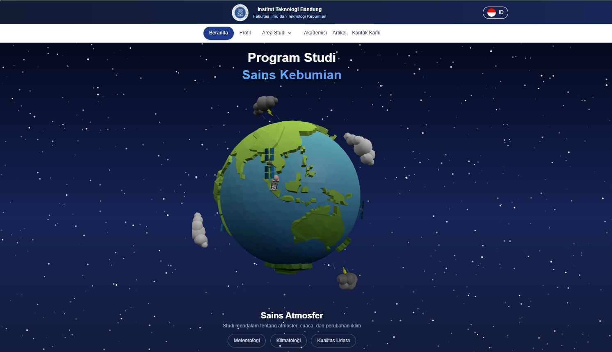
Freelance - NDAFinishing pengembangan web menggunakan React dan Django, perbaikan bug berdasarkan UAT, serta implementasi elemen 3D dengan Three.js.
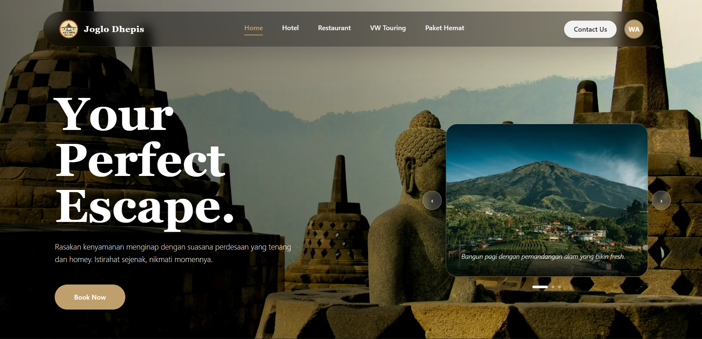
Personal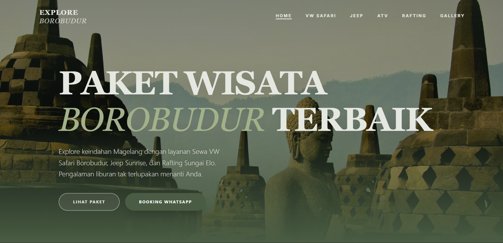
Personal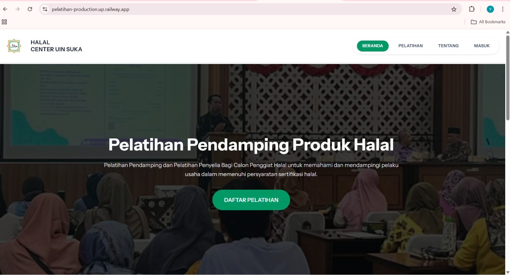
PersonalKontribusi pengembangan fitur dan deployment aplikasi Laravel, Blade, Filament, dan Tailwind CSS.
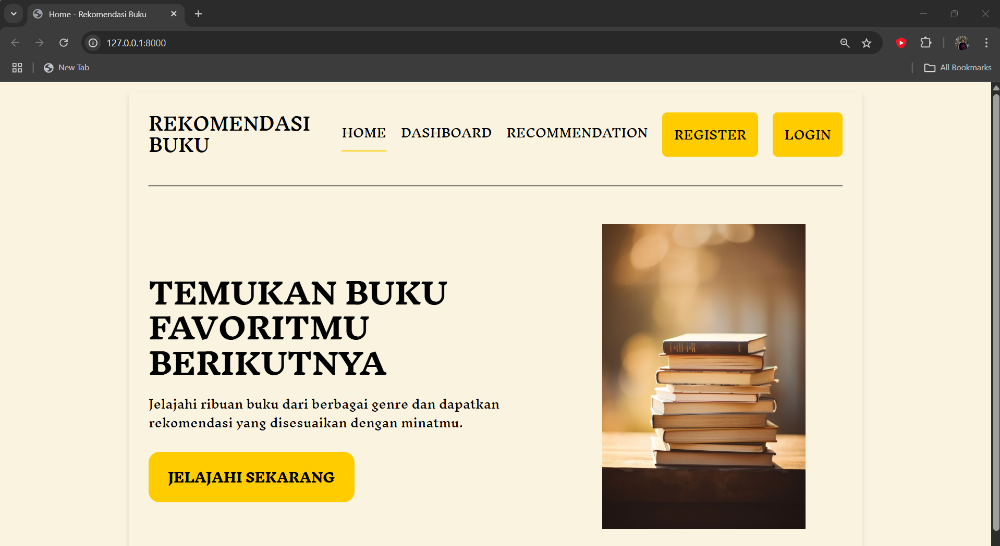
PersonalSistem rekomendasi buku responsif dengan fitur detail buku, rating, dan ulasan.
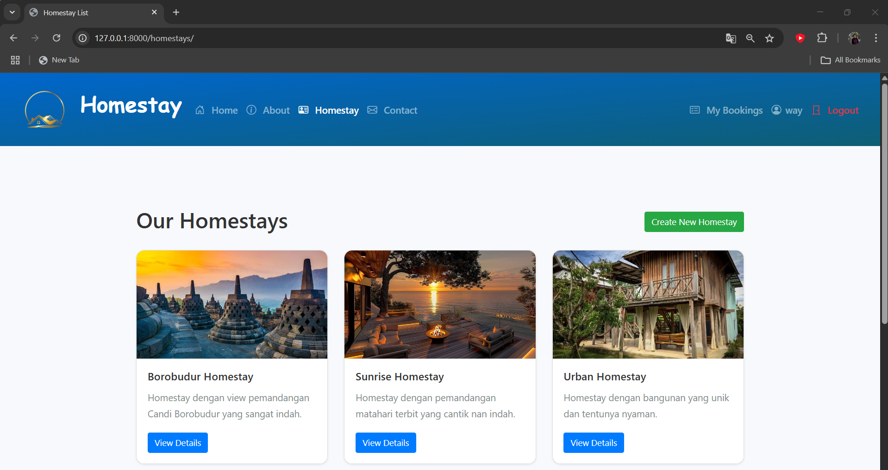
PersonalPlatform pemesanan dan pendaftaran homestay berbasis web dengan alur pengguna yang sederhana.
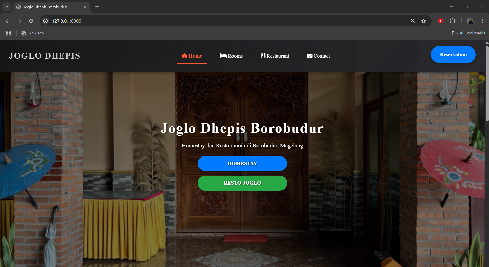
PersonalWebsite informasi homestay pribadi yang menampilkan detail kamar dan fasilitas utama.
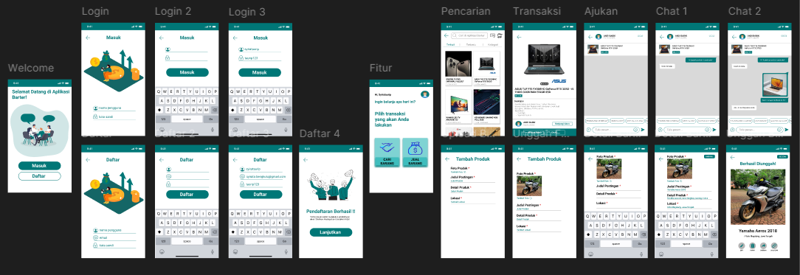
UI/UXPerancangan user flow dan antarmuka aplikasi mobile untuk skenario transaksi barter.
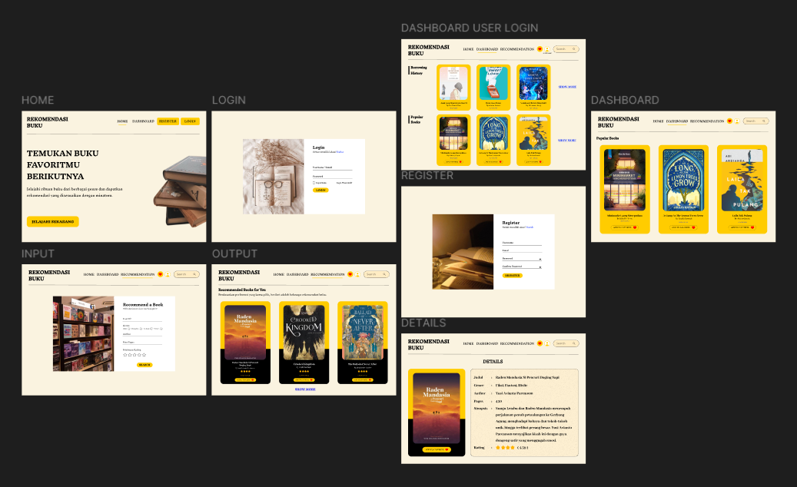
UI/UXEksplorasi visual sistem rekomendasi buku dengan fokus informasi, rating, dan ulasan pengguna.
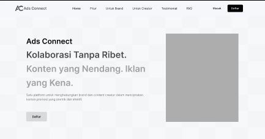
UI/UXDesain marketplace jasa iklan yang mempertemukan brand dan konten kreator secara terstruktur.
Sertifikat
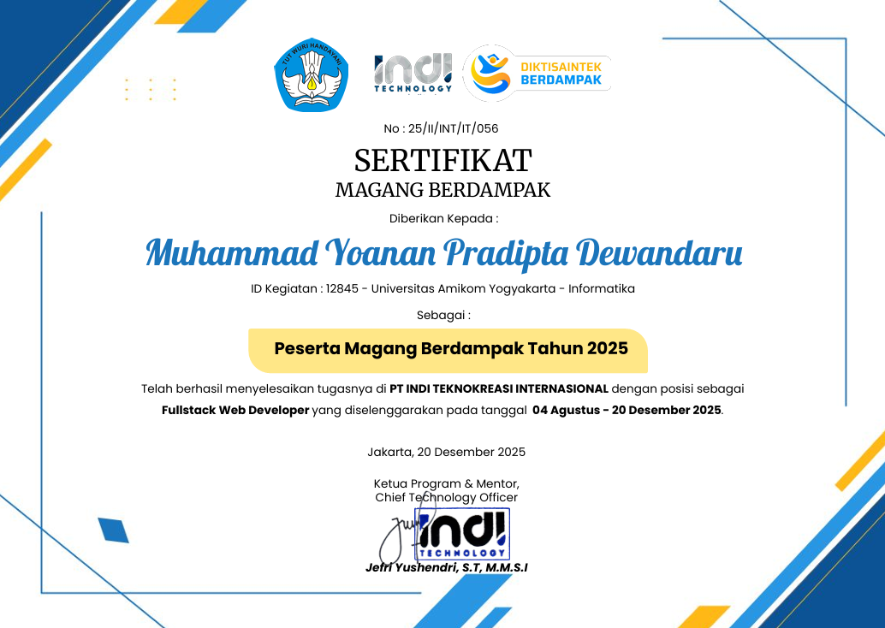
PT Indi Teknokreasi
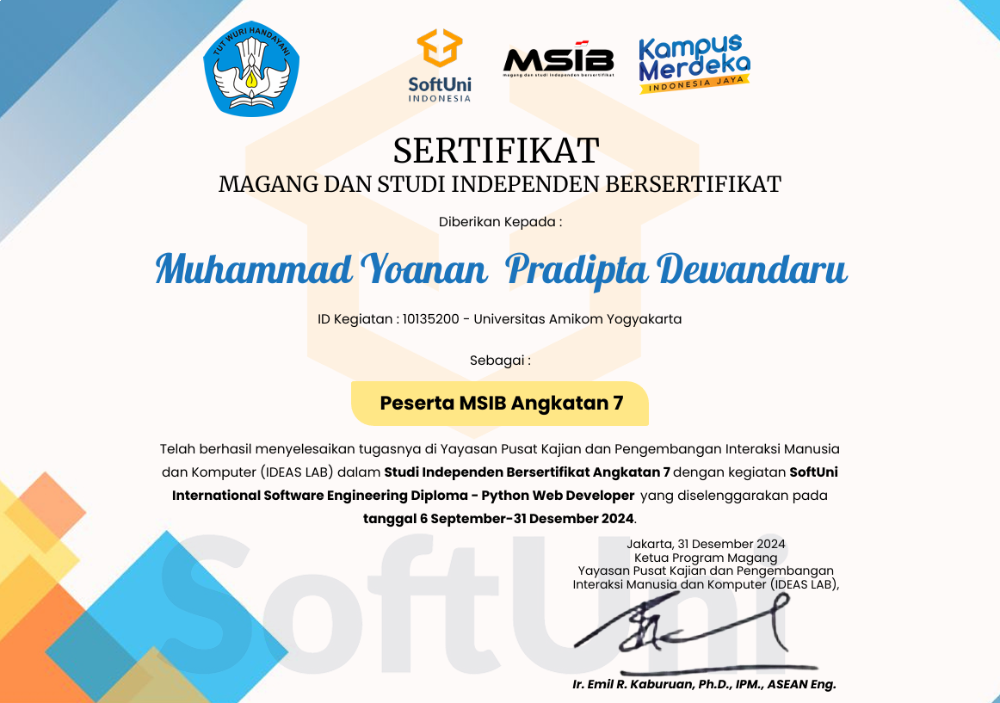
Kampus Merdeka
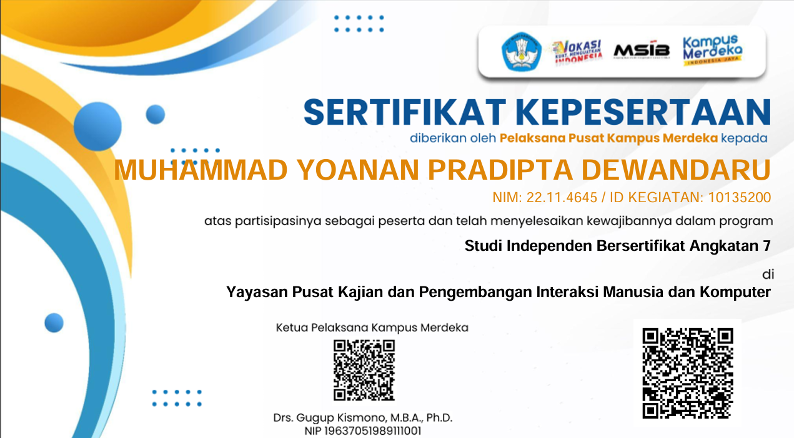
SoftUni Indonesia
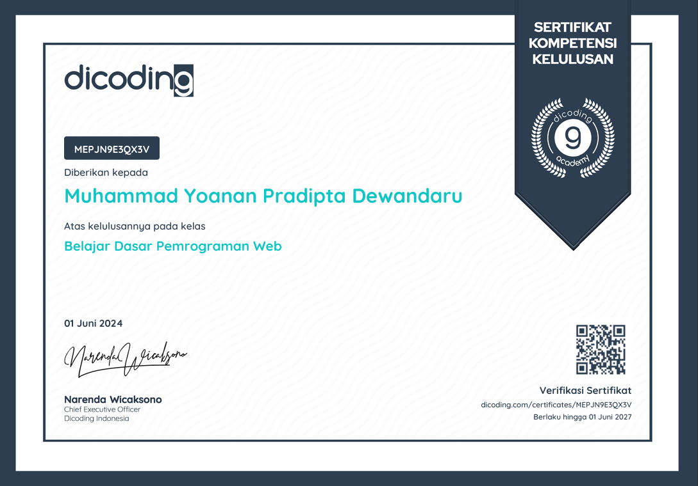
Dicoding
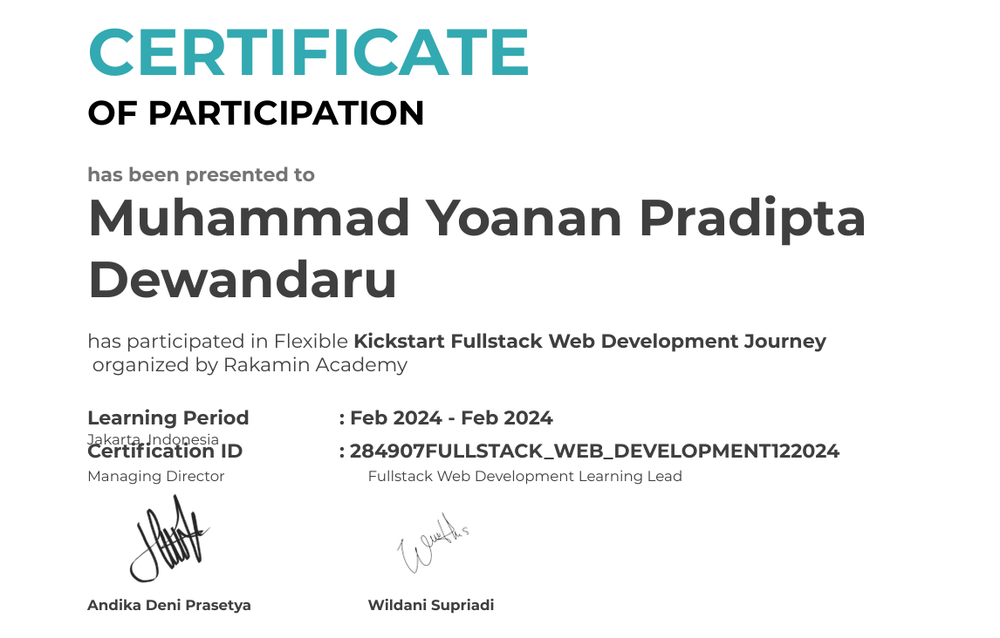
Rakamin Academy
Kontak
Jika perusahaan Anda sedang membuka posisi Fullstack, Frontend, atau Backend Developer, saya sangat terbuka untuk berdiskusi lebih lanjut. Saya siap bekerja, belajar cepat, dan bertumbuh bersama tim Anda.